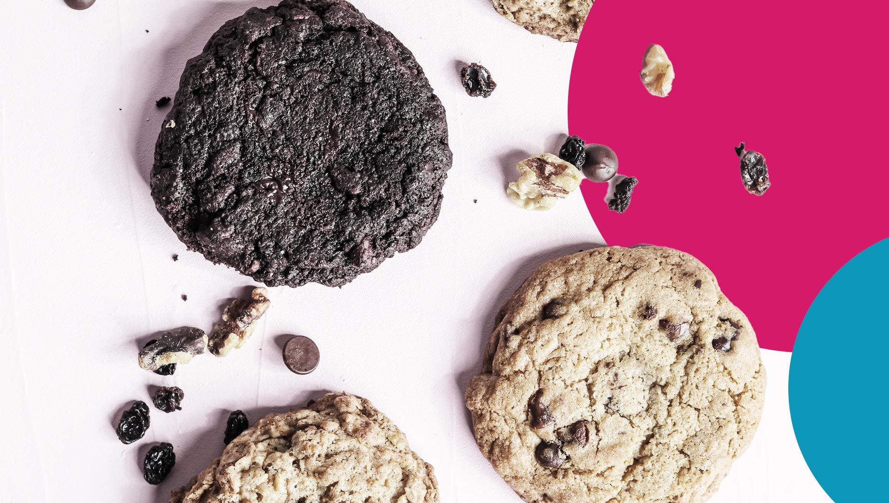
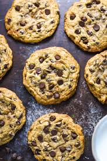
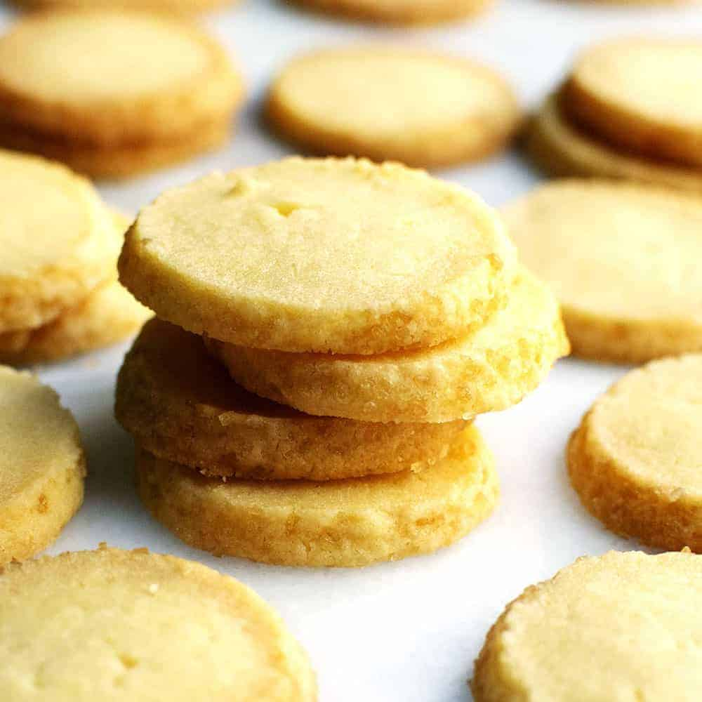
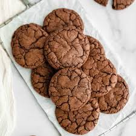
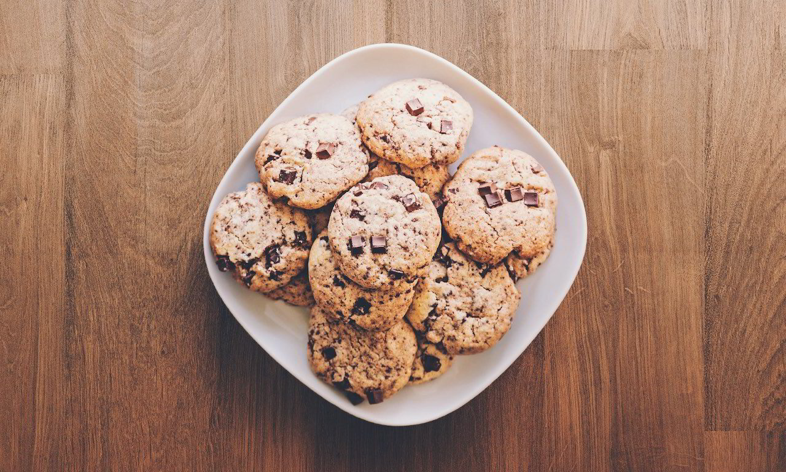

Cookie Recipes
Just 1 click to 1 recipie




Chocolate Chip Cookie Recipe
Ingredients:
- 2 1/4 cups all-purpose flour
- 1/2 teaspoon baking soda
- 1 cup unsalted butter, room temperature
- 1/2 cup granulated sugar
- 1 cup packed light-brown sugar
- 1 teaspoon salt
- 2 teaspoons pure vanilla extract
- 2 large eggs
- 2 cups semisweet and/or milk chocolate chips
- serving - 25 cookies
Instructions:
- Preheat oven to 350°F (175°C).
- In a small bowl, whisk together the flour and baking soda; set aside.
- In a large bowl, cream together the butter and sugars until light and fluffy.
- Add the salt, vanilla, and eggs, and mix until well combined.
- Gradually add the flour mixture, mixing until just combined.
- Stir in the chocolate chips.
- Drop tablespoon-sized balls of dough onto a baking sheet, spacing them about 2 inches apart.
- Bake until cookies are golden around the edges, but still soft in the center, 8 to 10 minutes.
- Remove from oven and let cool on baking sheet for 2 minutes; transfer cookies to a wire rack to cool completely.
Oat Cookie Recipe
Ingredients:
- 2 cups all-purpose flour
- 1 teaspoon baking soda
- 1 cup unsalted butter, room temperature
- 1 cup white sugar
- 1 cup brown suger
- 3 cups cooking oats
- 1 teaspoon salt
- 2 teaspoons pure vanilla extract
- 2 large eggs
- 1 teaspoon ground cinnamon
- 2 tablespoons water
- serving - 25 cookies
Instructions:
- Preheat your oven to 350°F (175°C) and line a baking sheet with parchment paper.
- In a large bowl, beat the softened butter, brown sugar, and granulated sugar together until creamy and smooth.
- In a large bowl, cream together the butter and sugars until light and fluffy.
- Add the salt, vanilla, and eggs, and mix until well combined.
- Gradually add the flour mixture, mixing until just combined.
- After add oats.
- Drop tablespoon-sized balls of dough onto a baking sheet, spacing them about 2 inches apart.
- Bake until cookies are golden around the edges, but still soft in the center, 8 to 10 minutes.
- Remove from oven and let cool on baking sheet for 2 minutes; transfer cookies to a wire rack to cool completely.
Butter Cookie Recipe
Ingredients:
- 1 cup unsalted butter, softened
- 1/2 cup granulated sugar
- 1 large egg
- 2 teaspoons vanilla extract
- 2 1/4 cups all-purpose flour
- 1/2 teaspoon baking powder
- 1/4 teaspoon salt
- serving - 25 cookies
Instructions:
- Preheat your oven to 350°F (175°C) and line a baking sheet with parchment paper.
- In a large bowl, beat the softened butter, granulated sugar, and powdered sugar together until light and fluffy.
- Mix in the egg and vanilla extract until well combined.
- In another bowl, whisk together the flour, baking powder, and salt.
- Gradually add the dry ingredients to the wet mixture, mixing until a dough forms.
- Roll the dough into small balls (about 1 tablespoon each) and place them on the prepared baking sheet.
- Bake for 10-12 minutes or until the edges are lightly golden. The centers should still be soft.
- Let the cookies cool on the baking sheet for a few minutes before transferring them to a wire rack to cool completely.
Chocolate Cookie Recipe
Ingredients:
- 1 cup (2 sticks) unsalted butter, softened
- 1 cup packed brown sugar
- 1 cup packed white sugar
- 2 large eggs
- 1 teaspoon vanilla extract
- 3 cups all-purpose flour
- 1 teaspoon baking soda
- 1/2 teaspoon baking powder
- 2 cups semisweet chocolate chips
- 1/4 teaspoon salt
- serving - 25 cookies
Instructions:
- Preheat your oven to 350°F (175°C) and line a baking sheet with parchment paper.
- In a large bowl, beat the softened butter, granulated sugar, and powdered sugar together until light and fluffy.
- Mix in the egg and vanilla extract until well combined.
- In another bowl, whisk together the flour, baking powder, and salt.
- Gradually add the dry ingredients to the wet mixture, mixing until a dough forms.
- Fold in the chocolate chips until evenly distributed.
- Roll the dough into small balls (about 1 tablespoon each) and place them on the prepared baking sheet.
- Bake for 10-12 minutes or until the edges are lightly golden. The centers should still be soft.
- Let the cookies cool on the baking sheet for a few minutes before transferring them to a wire rack to cool completely.
